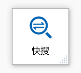
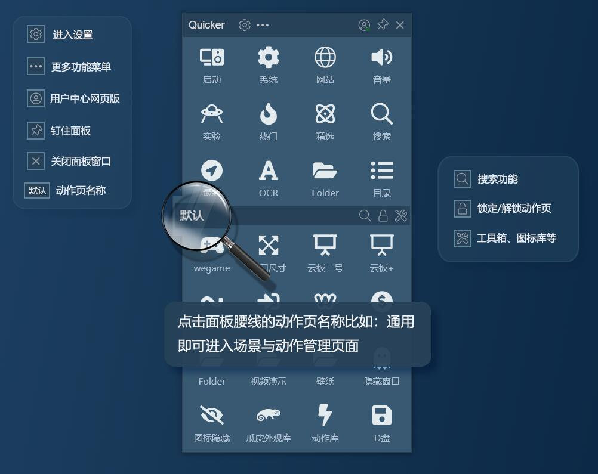

把 Quicker 用透的 5 个隐藏玩法——面板底下藏着这么多好东西
你以为 Quicker 就是弹个面板点按钮？我把它翻了个底朝天，挖出五个官方不怎么宣传、但真正能改变日常操作流的隐藏功能。
用了Quicker官网快一年了，我一直以为它就是个"弹出面板点按钮"的启动器——选中文字、中键一弹、点动作、完事。直到某个周末闲得慌去翻设置菜单，才发现面板底下藏着一堆好东西，官方首页不吹、教程也不特意提，但用起来真能让操作流变短一大截。
1. 悬浮按钮：便利贴式的临时高频入口
第一个让我拍大腿的就是悬浮动作按钮。之前遇到"某几天反复用同一个动作"的场景，我要么把动作塞进全局面板（塞完又不想删，面板越堆越乱），要么每次弹面板找半天。悬浮按钮解决的就是这个精确痛点——短期高频、用完即弃。
创建动作异常简单：弹面板，右键按住目标按钮往外拖，松手就生成一个独立的悬浮小按钮。左键点执行，中键点直接关掉，拖到哪都能重新摆位置。

我这个月赶一个数据录入的活，把"归档同类文件"拖在 Excel 窗口旁边，每处理完一批就点一下，中键一按直接消失。活干完了按钮也没留下，干净利落。翻了Quicker文档才确认，免费版限 1 个悬浮按钮，专业版不限——1 个其实够用，它的定位就是便利贴，不是永久工具栏。
2. 全局面板 vs 通用场景：90% 的人搞混的两个概念
面板窗口分上下两区，上半部分叫全局面板区，下半部分叫上下文面板区。但很多人不知道，在场景管理里还有个"通用"场景，和"全局"看起来长得一样、放的都是"通吃型动作"，实际加载时机完全不同。
我之前就是把全局和通用混着用，直到某天写了一个 Word 专属的动作页，发现通用场景的动作没跟上——才搞明白这套逻辑：
- 全局场景 = 面板上半区，永远显示，不管你在哪个软件里
- 通用场景 = 上下文区的兜底页，只有当前软件没专属动作页时才加载
还有个更隐蔽的设计：通用场景的动作页可以附加到其他软件的动作页后面。我把"聚合翻译""截图 OCR"这些通吃工具放在通用场景里，设置附加到所有软件页，这样不管在 PS 还是浏览器里，这些动作都会自动出现在专属页的末尾，不用每个软件都手动配一遍。

3. 腰栏搜索框：拼音匹配 + 全动作搜索的组合拳
面板中间那条腰栏我之前只当它是翻页指示器用的，直到有次动作多了找不到，随手在搜索框里敲了个"jt"，居然跳出了"剪贴板历史"——原来搜索框支持拼音首字母匹配！
这个隐藏的搜索能力好用到离谱：
- 输入拼音首字母，比如"sj"→"截图 OCR"、"wd"→"文档"
- 搜索范围是所有已安装的动作，不限当前动作页
- 腰栏上还有个锁定开关，能暂停上下文区的自动切换——在复杂操作时防止面板突然跳页
搜索框旁边是翻页小圆点，建了多页动作时白点指示当前页，点一下就能翻过去。整套腰栏设计藏得真深，我用了半年才注意到它不只是个工具栏。
4. 面板钉住 + 悬浮按钮：双开临时操作流
Quicker 的面板默认是"点一下就消失"的，这符合它四步流程的设计理念：选择对象 → 弹面板 → 点动作 → 自动关闭。但有时候你需要连续点好几个动作——批量处理图片的时候、连续复制粘贴的时候——每次弹一次太烦。
标题栏上那个"钉住"按钮就是为这个场景准备的。钉住后面板不再自动隐藏，你可以连续点动作，做完了再手动关。我现在钉住 + 悬浮按钮一起用：钉住面板保持打开，把最常用的一两个动作拖成悬浮按钮摆在旁边，形成一个临时的小操作面板，干完活把钉住解除、悬浮按钮中键关掉，恢复原状。
5. 动作库的私密分享：团队协作的隐形通道
从官方下载装好软件之后，就能进动作库看到 8000 多个现成动作，复制链接、面板空白处粘贴就能装上，这套公开的分享流程大家都知道。但私密分享很多人没注意到——你可以生成一个私有链接，只发给同事朋友，不用上传到公开动作库。
这个功能特别适合小团队：我和同事各做了一套符合自己工作流的组合动作，通过私密链接互相传，对方粘贴一下就能用，连配置都不用改。装完有新版本时按钮会自动出现更新角标，点一下就能同步最新版。
一个要避的坑
说了五个好用的，也提一个容易踩的：免费版悬浮按钮限 1 个，专业版不限。但即使你是专业版，也别同时拖三四个出来——悬浮按钮是便利贴，多了反而变成新的视觉噪音，和你当初想"减少面板拥挤"的初衷矛盾。短期高频才用，用完即弃，别搞成常驻工具栏。
还有个隐蔽点：全局场景的另外一个职责是轮盘菜单和鼠标手势的"默认动作"设置处。没给某个软件单独配置轮盘时，轮盘的每个位置执行什么、手势画个圈触发什么，都由全局场景里的默认值决定。我之前在 Word 里画个圈没反应，就是忘了给 Word 单独覆盖默认设置，轮盘一直在用全局的那套。
Quicker 是那种"用得越深发现越多"的软件，它的隐藏功能不像某些花里胡哨的软件搞个彩蛋菜单，而是藏在面板的每个角落——腰栏、标题栏、场景管理的附加设置里。把它用透的秘诀可能就是别被"弹面板点按钮"的表层认知框住，多翻翻设置、试试右键拖拽、敲敲搜索框，总能挖到新东西。我整理的动作备份和配置笔记，分别同步到了GitHub、Gitee、GitCode三个仓库，方便不同网络环境的朋友拉取。
如果你也在用 Quicker，试试右键拖个按钮到桌面——大概率会发现一个之前没想过的用法。